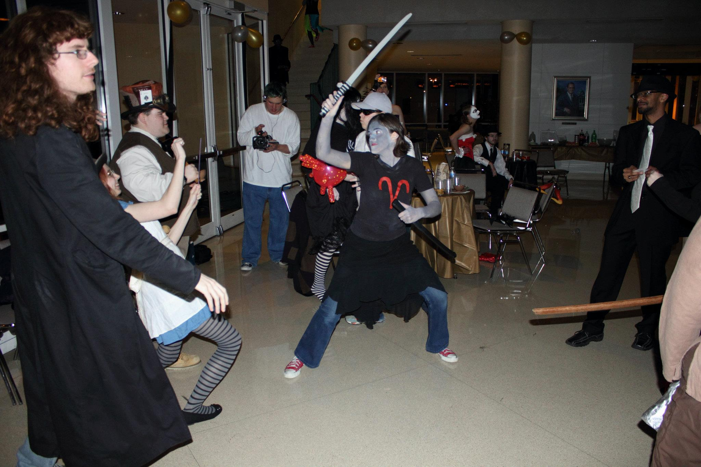
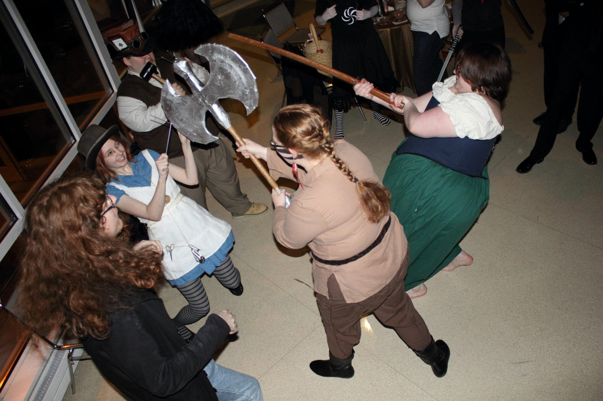
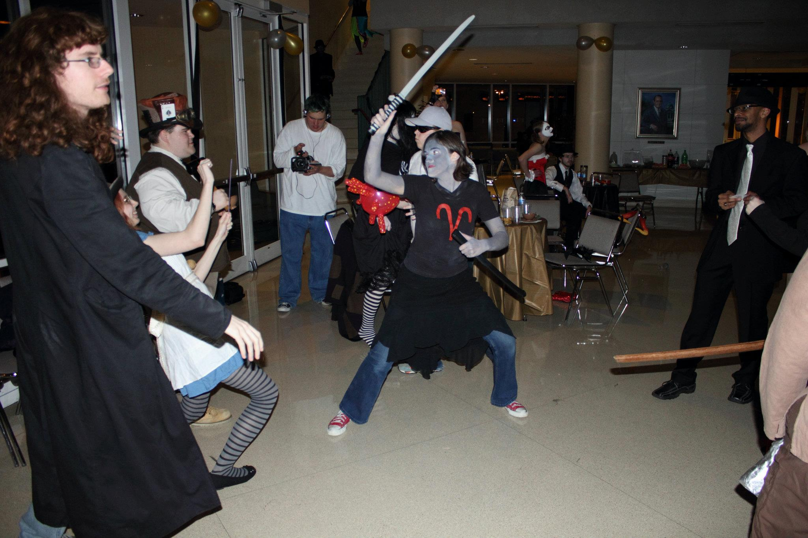
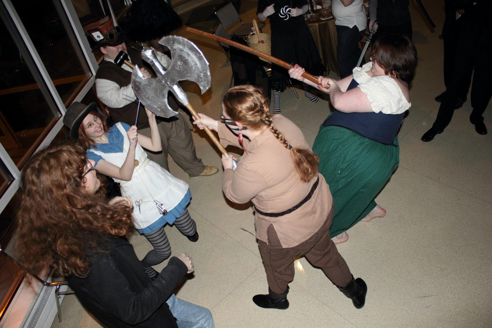

Previous Fun Things We've Done!
Cosplay Ball 2011
 
Talent Show 2012


More things to come soon! So keep checking back!

Cosplay Ball 2011
 
Talent Show 2012
More things to come soon! So keep checking back!